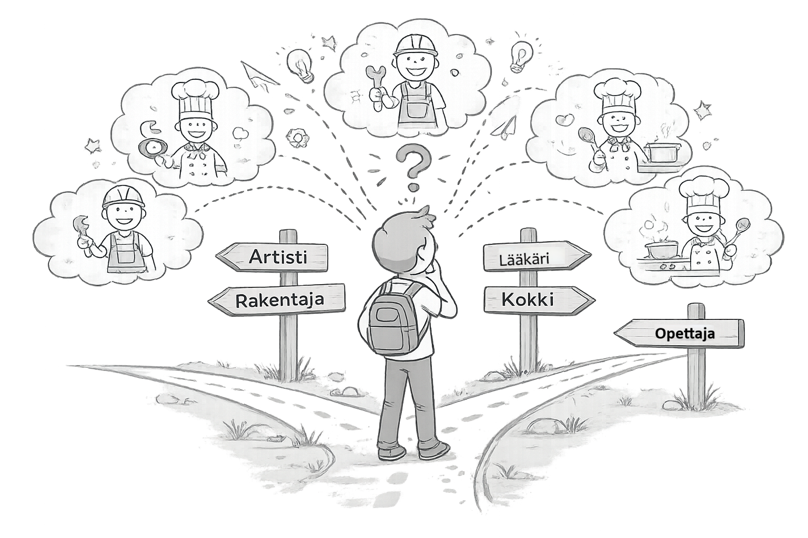

9. luokka – nyt tehdään valintoja
Tänä vuonna valmistaudut yhteishakuun ja teet päätöksiä, jotka vievät sinut eteenpäin. Ei tarvitse tietää kaikkea – riittää että otat seuraavan askeleen.
Minne peruskoulun jälkeen?
Mitä vaihtoehtoja sinulla on – ja mikä tuntuu omalta?
Eri polkuja
Peruskoulun jälkeen voit jatkaa lukioon, ammatilliseen koulutukseen tai TUVA-koulutukseen. Jokainen polku johtaa eteenpäin – ne vain kulkevat eri reittejä.
Ei ole yhtä oikeaa tapaa.

Polkuvalinta
ParitehtäväJutellaan pareittain eri vaihtoehdoista.
- Kumpi kiinnostaa enemmän – lukio vai amis?
- Mikä epäilyttää tai jännittää?
- Mikä on varasuunnitelmasi?
⏱ Aika: 10 min
Yhteishaku
Miten haet – ja mitä kannattaa ottaa huomioon?
Hakeminen käytännössä
Yhteishaku tehdään Opintopolku-palvelussa. Voit laittaa useita hakukohteita tärkeysjärjestykseen. Mieti etukäteen: varma, realistinen ja unelma.
Hakemista voi muuttaa hakuajan sisällä.

Hakustrategia
YksilötehtäväSuunnittele omat hakukohteesi.
- 1 varma – johon pääset melko varmasti
- 1 realistinen – johon sinulla on hyvät mahdollisuudet
- 1 unelma – johon haluaisit päästä
⏱ Aika: 10 min
TET
Mitä työelämä oikeasti on – ja mitä se kertoo sinusta?
Viimeinen TET
9. luokan TET on erityinen. Se voi vahvistaa tai muuttaa ajatuksiasi tulevaisuudesta. Molemmat ovat hyviä lopputuloksia.
Kokemus ei mene hukkaan – se auttaa valitsemaan.

TET-reflektio
RyhmäkeskusteluJaetaan kokemuksia TET-jaksosta.
- Mikä oli kiinnostavinta?
- Mikä yllätti – hyvällä tai huonolla tavalla?
- Sopisiko tämä työ sinulle tulevaisuudessa?
⏱ Aika: 15 min
Testaa itsesi
Kokeile sanastoa ja tunnelmaa – lukio vai amis?
Kaksi peliä, kaksi maailmaa
Kokeile molempia pelejä ja katso, kumpi tuntuu tutummalta tai kiinnostavammalta. Se voi kertoa jotain siitä, mikä sopii sinulle paremmin.
Ei oikeita tai vääriä tuloksia.
Lukiosanastopeli
Tutki lukion sanastoa ja arvioi, tuntuuko se omalta.
Aloita lukiopeliMitä peli kertoi?
ParitehtäväJutellaan pareittain pelien jälkeen.
- Kumpi tuntui helpommalta tai tutummalta?
- Oliko jokin sana tai asia, joka yllätti?
- Muuttiko peli ajatuksiasi?
⏱ Aika: 10 min
Valinnat ratkaisee
Nyt on aika tehdä päätös – ja se on ok.
Päätös ei ole lopullinen
Valinta voi tuntua isolta. Mutta muista: polkuja voi vaihtaa myöhemminkin. Tärkeintä on ottaa seuraava askel.
Rohkeus valita on jo puolet matkasta.
Päätös
YksilötehtäväKirjoita tai sano ääneen oma valintasi.
- Mitä aiot hakea ensisijaisesti?
- Miksi juuri se?
- Mitä teet seuraavaksi?
⏱ Aika: 10 min